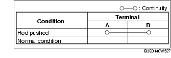
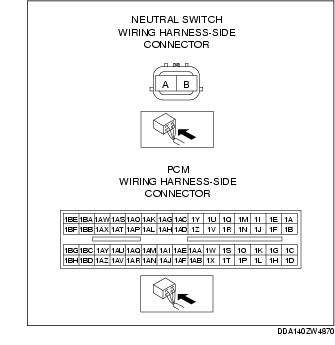

Neutral switch inspection [ZY]
- • Before performing the following inspection, make sure to follow the procedure as indicated in the troubleshooting flowchart. (See Troubleshooting Procedure.)
Continuity Inspection
1. Remove the neutral switch.
2. Verify that the continuity between neutral switch terminals A and B is as indicated in the table.
- • If not as indicated in the table, replace the neutral switch.
- • If the monitor item condition/specification (reference) is not within the specification, even though there is no malfunction, perform the "Circuit Open/Short Inspection".

Circuit Open/Short Inspection
1. Remove the PCM connector cover.
2. Disconnect the PCM connector. (See INTAKE-AIR SYSTEM REMOVAL/INSTALLATION [ZY].)
3. Inspect the following wiring harness for open or short circuit (Continuity inspection).

Open circuit
- • If there is no continuity, there is an open circuit. Repair or replace the wiring harness.
- - Neutral switch terminal A and PCM terminal 1J
- - Neutral switch terminal B and body GND
Short circuit
- • If there is continuity, there is a short circuit. Repair or replace the wiring harness.
- - Neutral switch terminal A and body GND
- - Neutral switch terminal B and power supply